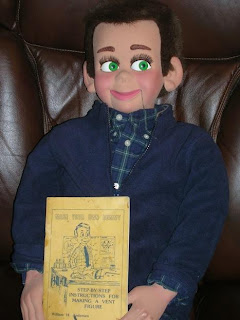

Willie Winkle - aka "Eddie"
10/8/2010
{kind=link}

Question: Eddie is looking forward to his "English" lessons in the ventriloquism Course. We were wondering if you may have made him? -Kirk
* * * *
From Mr. D: A vent figure holding a book on How to Build a Dummy - now THAT'S a twist! I'm trying to guess the message in that picture!
"Eddie" was sold by Maher Studios, but I did not build him. He was designed and built by Craig Lovik (or his son Keith - depending on the year he was made). He was sold as "Willie Winkle" and one of the most popular characters we sold. I'm still partial to that little fellow myself!
* * * *
From Mr. D: A vent figure holding a book on How to Build a Dummy - now THAT'S a twist! I'm trying to guess the message in that picture!
"Eddie" was sold by Maher Studios, but I did not build him. He was designed and built by Craig Lovik (or his son Keith - depending on the year he was made). He was sold as "Willie Winkle" and one of the most popular characters we sold. I'm still partial to that little fellow myself!
So - what language does "Eddie" now speak? He spoke English when I packed him - must have had some sort of memory lapse during his trans-Atlantic flight!